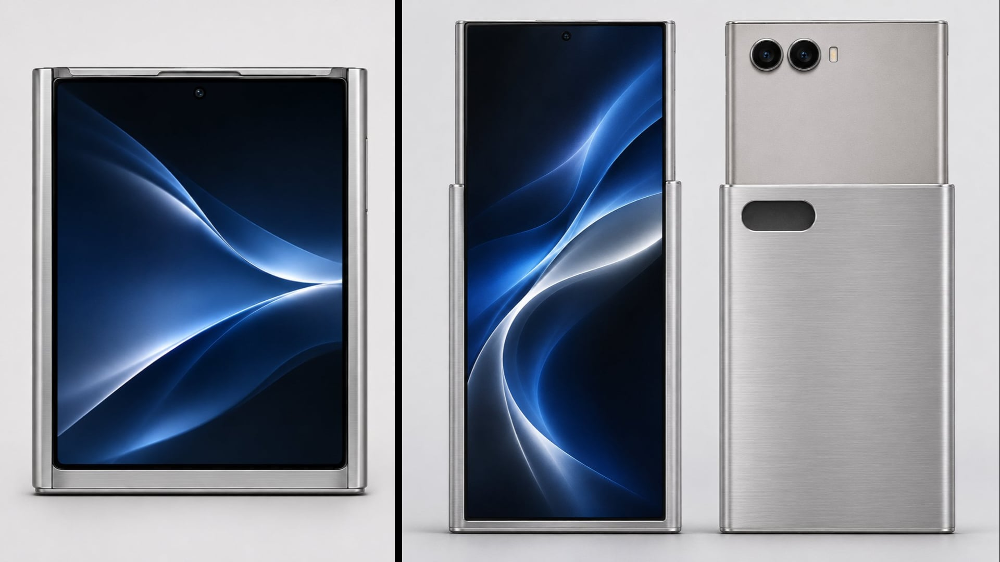
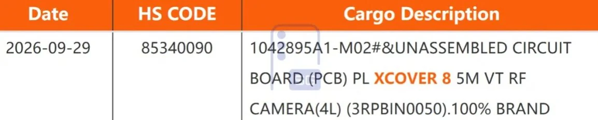
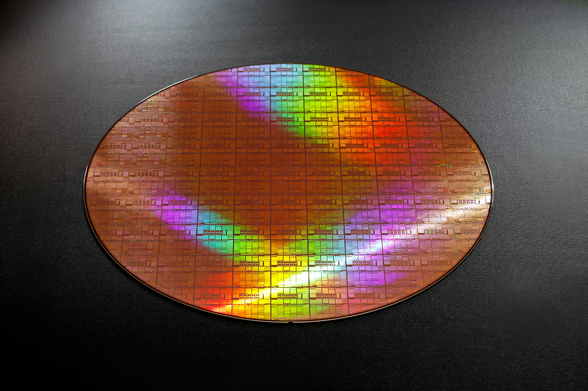
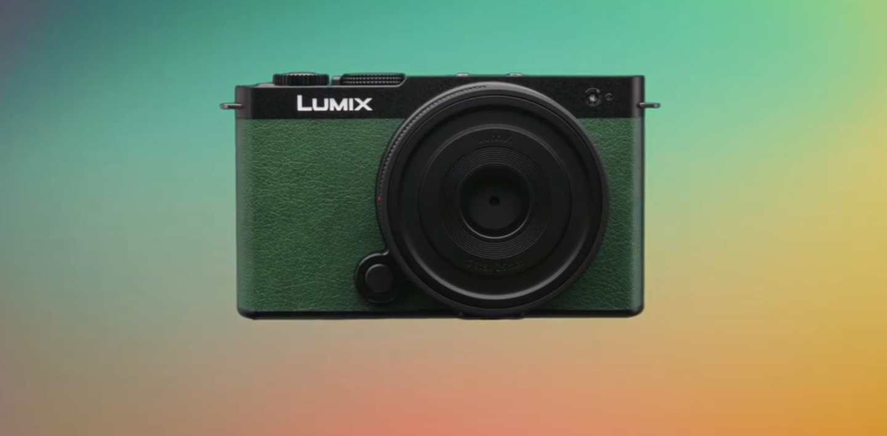
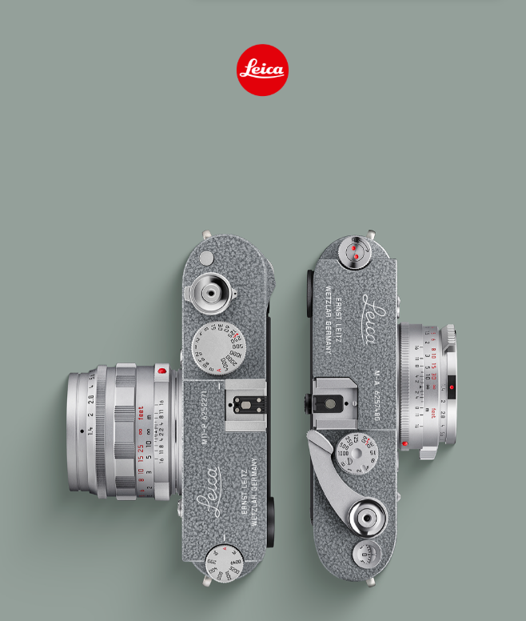
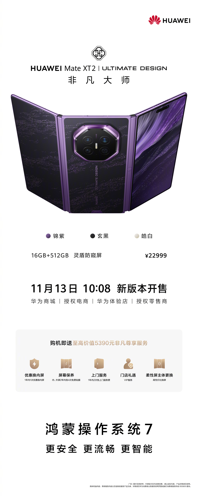
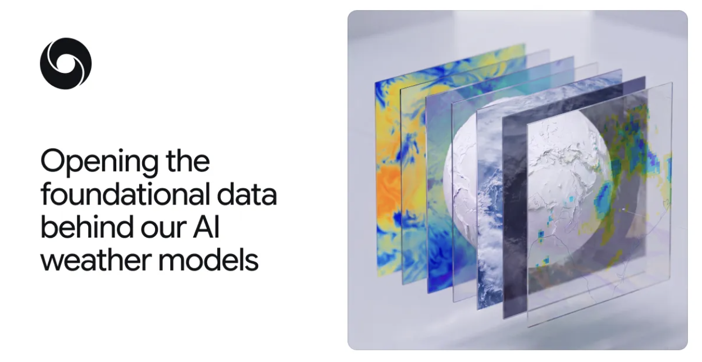
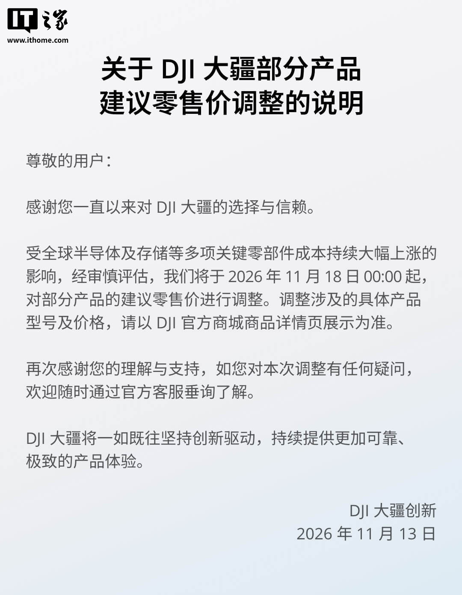

뉴스
기술의 변화, 매일 한눈에.
카메라 · 스마트폰 · AI, 해외 테크 소식을 모아 전합니다.
최근 발행2026-11-14
새로 들어온 소식
최신 뉴스
전체 4,354개 기사SMIC 자오하이쥔: 3분기 웨이퍼 평균 단가 전 분기 대비 1.8% 상승
SMIC 자오하이쥔: AI 컴퓨팅 성능 공급 부족, 2027년 반도체 파운드리 생산 능력 매우 부족할 것

상하이 하이실리콘, CS6286 이미지 센서 출시로 차량 센트리 시스템 배터리 수명 7일 이상 연장
18,999위안부터, Samsung과 중국 통신이 공동 개발한 심계천하 W27 폴더블 디스플레이 스마트폰 판매 시작

삼성의 수직 확장 스마트폰, 16:9 및 21:9 화면 비율 전환

삼성, 아이폰 18 출시 지연의 원인일 수도

Samsung Galaxy XCover 8/FR 견고한 스마트폰 2종 공개, 내구성과 스캔 기능 강조
Samsung Galaxy S27 시리즈 스마트폰 배경화면 유출: 5가지 색상, 접힌 리본 디자인

SAG 보고서: 2026년 3분기 전 세계 폴더블 스마트폰 출하량, Samsung 점유율 69%로 선두, Apple이 2027년 시장 판도 바꿀 것으로 예상

Rapidus, 2nm 첨단 공정 양산 2028 회계연도로 연기 검토 중인 것으로 알려져

Panasonic LUMIX S9 II 카메라, 2027년 초 출시 예정
OPPO Reno17 시리즈 스마트폰, 뤄톈이와 협업 테마곡 '점등기우시각' 공개

[업데이트] Oppo, 포켓 짐벌 카메라, 새로운 폴더블 스마트폰, 와이드 플래그십 스마트폰 개발 중

OPPO, 다수의 신제품 공개: Pocket 짐벌 카메라 연말 전후 출시 예정, 폴더블 및 바 타입 스마트폰도 출시 예정

라이카 M-A/M11-P 해머톤 에디션 카메라 출시, 56,000위안부터
완성 웨이퍼의 출고부터 포장까지 100% 완전 자동화, 징둥(JD.com) 반도체 산업 최초 스마트 물류 솔루션 출시
올 하반기 유일한 국산 플래그십 스마트폰: Huawei Pura X View 바 타입 스마트폰, 100만 대 이상 판매 돌파

22,999위안: Huawei Mate XT 2 비범대사 3단 폴더블 스마트폰, 16GB+512GB 링둔(灵盾) 프라이버시 보호 스크린 추가, 오늘 10:08 판매 시작

구글, WeatherNext 3 기상 모델용 데이터 세트 오픈소스 공개: SatWeave 위성 이미지 스티칭 데이터 세트 및 PARDIG 글로벌 강수량 정보 포함

AI 스마트폰 장악의 핵심 단계: Google Gemini 자동화 앱 목록 공개, 현재 총 134개

DJI, 11월 18일부터 일부 제품 권장 소매 가격 조정 발표
검색 결과가 없습니다
다른 검색어를 입력하거나 필터를 초기화해 보세요.